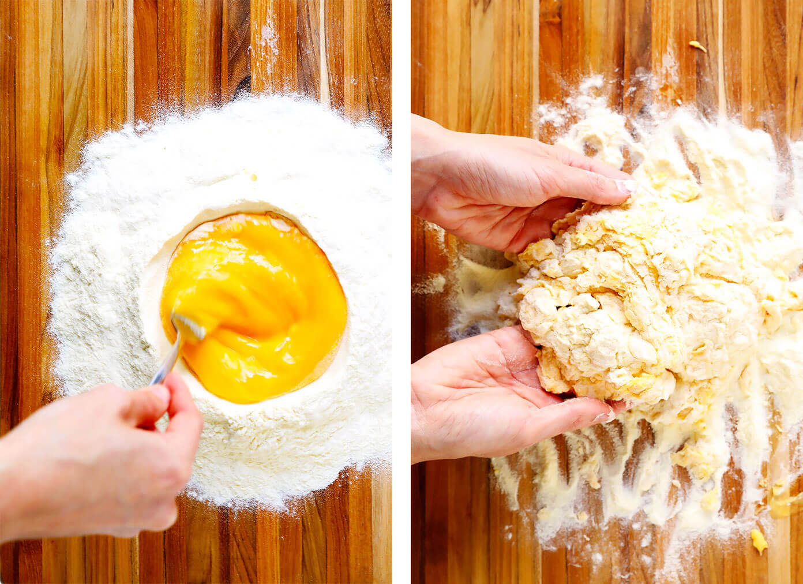
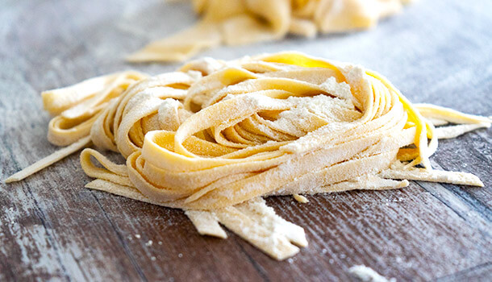

Gör Såhär
- Stek köttfärsen på medelhög värme och separera på stora klumpar.
- Finhacka vitlöken
- Häll i tomaterna och vitlöken när köttfärsen är till störst del grå
- Häll på paprikan och salta till egen smak
- Häll sedan i en halv dl vatten och låt stå på medelvärme och rör runt nån gång i minuten
- Forma en grop med mjölet och knäck äggen i gropen
- Ta en gaffel och långsamt blanda in mjölet så att äggen inte rinner ut från gropen
- Knåda ihop degen och dela den i två delar
- Kavla ut halvorna så platt det går och skär dem i valfri form
- Koka pastan och sen servera med alternativ basilika

